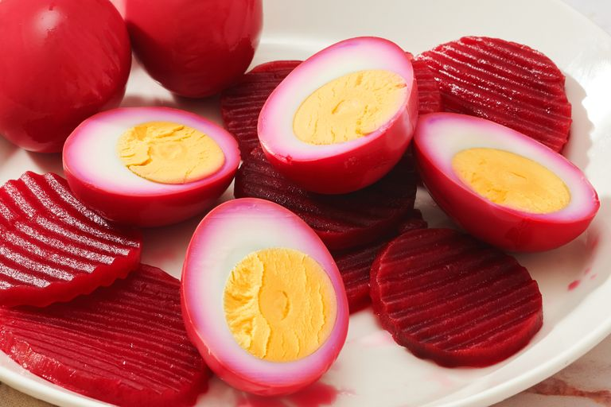

Home
Teriyaki Chicken
Pasta Salad
Quick Pickled Eggs and Beets

These beet pickled eggs are delicious and simple to make! This is my late grandmother’s recipe, and everyone loves it. You can double the recipe for larger gatherings. The pickled eggs will keep in the fridge for up to two weeks.
Ingredients
- 8 large eggs
- 1 (15-ounce) can sliced beets with liquid
- ½ cup white vinegar
- ½ cup white sugar
- ½ cup water
- ½ teaspoon ground cinnamon (Optional)
Steps
- Gather all ingredients.
- Place eggs in a saucepan and cover with cold water. Bring water to a boil and immediately remove from heat. Cover and let eggs stand in hot water for 10 to 12 minutes. Remove from hot water, cool, and peel. Place eggs in a glass or plastic container.
- Combine beets, vinegar, sugar, water, and cinnamon in a saucepan. Bring to a boil; stir until sugar is dissolved. Pour over eggs. Cover and chill for 4 hours to overnight.